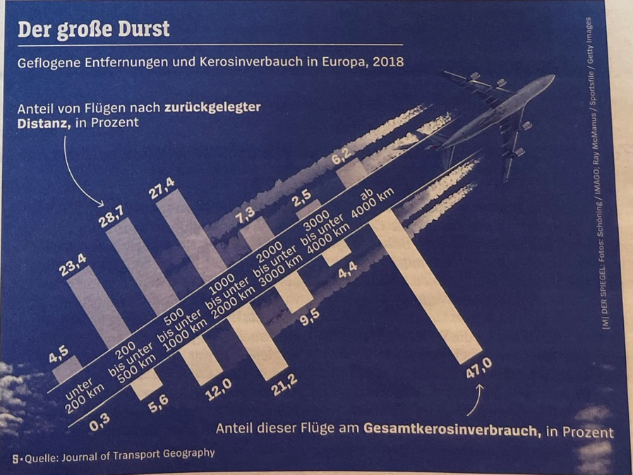

Graphic Critique: The Great Thirst
Brief
Critique THREE visuals and redesign ONE of these visuals, providing a rationale for the changes. The redesigned graphic is presented here.
Original Graphic
Geflogene Entfernungen und Kerosinverbrauch in Europa, 2018 by Marco Evers
Source: Der Spiegel, No. 44, 29 November 2022, P107.
Audience: General Public

Translation
| German | English |
|---|---|
Der große Durst |
The big/ great Thirst |
Geflogene Entfernungen und Kerosinverbrauch in Europa, 2018 |
Flight distances and kerosine consumption in Europe, 2018 |
Anteil von Flügen nach zurückgelegter Distanz, in Prozent |
Percentage of total flights by distance category |
Anteil dieser Flüge am Gesamtkerosinverbrauch, in Prozent |
Percentage of total kerosine consumption per distance category |
The graphic accompanies an article that challenges the popular/ political belief that short flights within Europe produce the majority of flight related pollution. As a result of this belief, several countries are introducing more trains, and night trains, between cities or banning flights shorter than a certain distance in favour of train trips. The graphic shows the data in percentage, per distance category, on the number of flights within and from Europe in 2018, and their relative total fuel consumption, indicating which distance category is the biggest polluter.
Reflection
Why I chose the Graphic
This was an interesting graphic to assess as firstly, it contained some truth, but I felt that how it displayed the information detracted from the truth or full impact of the message. Secondly, I could see that there was several problems with it with regard to Universal Design for learning (UDL), chart junk, and being "unfriendly". Thirdly, it has some positive aspects. The way the data was represented supported the challenge to the popular belief that short flights are the biggest polluters, but it could have done so more effectively.
Which Skills were Demonstrated
The skills demonstrated were applying the learning on effective graphic design in analysing the graphic for its positive and negative aspects, systematically noting these and suggesting improvements. The graphic is from a popular but serious political magazine and could have shown the data more clearly and accurately, without upsetting their readers. I extracted data from the original chart and recreated the chart using Excel. I also created second chart which shows the comparison of fuel consumption per flight distance much clearer.
What I learnt from analysing and improving the graphic
The first thing I learnt from the assignment was to start with the data. Graphical representations are easier to look at and are therefore easier to misuse to distort the message. I wasn’t sure whether this was the case until I looked at the data. It confirmed the message.
The second thing I learnt is how a graphic can be improved by following the guidelines of e.g., Universal Design for Learning (UDL) and Tufte year, and that these guidelines are time independent and apply to every era.
Finally, I learnt that there are two areas in which I could improve on in the future: graphic design and data analysis. Although my charts were clearer, I am not a graphic designer. Nor am I a data analyst, so I could do with both being able to manipulate more complex data and be able to present it in a more visually appealing way.